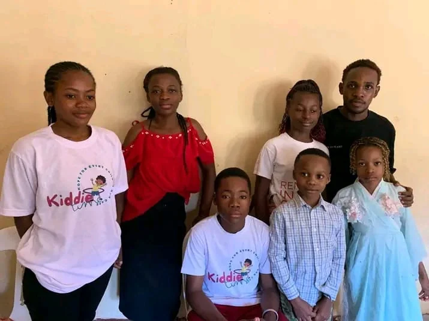

Best interests first
Decisions involving a child should prioritize their safety, wellbeing and developmental needs.
Every interaction, activity, image and decision should protect children’s wellbeing, privacy and dignity.
Kiddie Care expects volunteers, partners, visitors and supporters to act in the best interests of children at all times.
This public commitment outlines the standards the organization should use as formal safeguarding procedures, reporting channels and staff responsibilities continue to develop.
Decisions involving a child should prioritize their safety, wellbeing and developmental needs.
No humiliating language, discrimination, inappropriate contact, exploitation or abuse is acceptable.
Activities should have responsible adults, clear boundaries and age-appropriate arrangements.
Photos and stories should be collected and shared carefully, with consent and without exposing sensitive information.
Concerns raised by a child or adult should be taken seriously, recorded and directed to appropriate protection support.
People and organizations working with children should understand and follow safeguarding expectations.

Use the contact form and select “Safeguarding concern.” Do not include unnecessary sensitive details in a public or shared device.